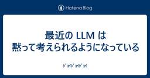
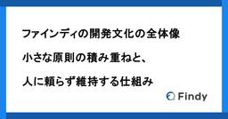
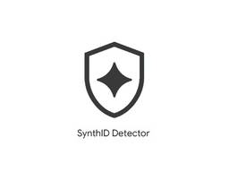

直近1週間の人気フィード
はてブ3件以上・直近7日をスコア順に。1ソース3件まで（Discover RSSと同内容）

bpmn.io で始める AI-Ready な業務フロー管理 204 フューチャー技術ブログ
204 フューチャー技術ブログ
はてブ204
AI・LLM
業務フローの記述形式に BPMN 2.0 を採用し、bpmn.io のエディタ・bpmnlint による静的解析・生成 AI によるレビュー・bpmn-to-image での画像化で管理する方法を紹介します。
2日前

これには驚いた！ 今度はExcelやWordやPower Pointをオープンソースで再構築、Win、Mac、Linux、Web対応で無料 248 コリス
コリス
はてブ248 · 新しく出た
設計・SRE・基盤 / フロントエンド・デザイン
今週はCrafting Appsの記事ばかりになっています。 Photoshopを再構築したオープンソース版「PhotoCraft」の日本語対応など、Adobeのアプリ7種類を毎日のようにアップデート
2日前
Anthropic、「Claude」の新機能「Dashboards」「Motion」を発表。「Docs」「Slides」「Design」は無償でも提供／データからダッシュボード、アイデアからアニメーションを生成 163窓の杜
はてブ163 · 新しく出た
AI・LLM / フロントエンド・デザイン / カルチャー
米Anthropicは10月8日（現地時間、以下同）、「Claude」の新機能「Claude Dashboards」と「Claude Motion」を発表した。併せて、テスト提供されていた「Docs」「Slides」「Design」がベータ版を卒業し、無料（Free）を含むすべてのプランで利用できるようになったこともアナウンスされた。
2日前

最近のLLMは黙って考えられるようになっている 295 ｼﾞｮｲｼﾞｮｲｼﾞｮｲ
はてブ295
AI・LLM
LLM の「思考」といえば思考の連鎖 (Chain of Thought; CoT) が有名ですが、思考の連鎖はいわば「喋りながら考えている」ことに相当します。これに対して、最近の LLM は「黙って」考えられるようになってきています。 鍵となるのはフィラートークン (filler tokens) です。これは「.」などの意味のないトークンのことです。これを質問に後付けすることで、精度が高くなることが確認されています [Greenblat 2025]。 少し難しい以下のような問題に思考の連鎖を付けずにただちに答えさせようとしても LLM は間違えます。 問題：イリジウムの原子番号とモーツァルト…
4日前
Launching an opt-in vulnerability-finding service for open-source software
21 Anthropic Research
はてブ21 · 新しく出た
AI・LLM / セキュリティ
We’re launching OSS Scanner, an opt-in vulnerability scanner for the open-source ecosystem informed by our experience using Claude to find vulnerabilities during Project Glasswing. Projects that join will receive thorough, periodic security scans by our strongest models at no cost.
3日前

PhotoshopやIllustratorをオープンソースで再構築した「Crafting Apps」が日本語フォント、UIの日本語化に対応 414
コリス
はてブ414 · 新しく出た
フロントエンド・デザイン
10/5に紹介した、PhotoshopやIllustratorをオープンソースで再構築した「Crafting Apps」が早くも日本語フォント、UIの日本語化に対応した模様。 下記の画像はCrafti
3日前

AI時代に、あえて「一人で全部」をやめる。SansanがPdMを5つの専門ロールに分ける理由 33 Sansan Tech Blog
はてブ33
AI・LLM
AIの発展によって、プロダクトマネジャー（以下PdM）が一人で担える仕事の範囲は広がっています。プロトタイプをつくり、コードを書き、顧客の声を整理し、Go-to-Marketまで考える。「これからは一人のPdMが、より多くを担う」。それがAI時代の定石に見えます。Sansanが選んだのは、一見するとその流れに逆行する戦略です。PdMに求める共通の基礎を定めた上で、役割を5つの専門領域に分け、それぞれの領域を強みとするメンバーを組み合わせてプロダクトを前に進める。万能な一人へ仕事を集約するのではなく、専門性を持つメンバーがチームで大きな成果を狙う組織へ移る挑戦を開始しました。今後も加速する技術の…
2日前

ファインディの開発文化 - 小さな積み重ねと、それを支える仕組み 11 Findy Tech Blog
はてブ11 · 仕組みを掘る
組織・マネジメント・QA
こんにちは。ファインディ株式会社でプリンシパルエンジニアをしている戸田です。 このテックブログではこれまでファインディの開発組織の取り組みを紹介してきました。一方で、開発組織の文化を紹介した記事はあまりありませんでした。 そこで今回は、弊社のことをさらに知ってもらうためにファインディの開発文化を紹介します。日々の開発の進め方から、それを組織に広げて続けるための仕組み、そして文化を支えているものまで、なぜそうしているのかと合わせて紹介します。ファインディの開発組織に興味を持ってくださっている方や、組織の文化づくりに取り組んでいる方の参考になると幸いです。 開発の土台をつくる コード生成前の準備 …
2日前

Introducing the Anthropic Cyber Mission 8 Anthropic News
はてブ8 · 新しく出た
AI・LLM
Anthropic is an AI safety and research company that's working to build reliable, interpretable, and steerable AI systems.
3日前

「ソフトウェアエンジニアリングの基礎」から見る読書マップ 189 フューチャー技術ブログ
はてブ189
オライリー・ジャパンの『ソフトウェアエンジニアリングの基礎 ―コーダーからエンジニアになるための実践ガイド』を読んだ感想と、各章の「関連リソース」に挙がる書籍55冊を整理した読書マップを紹介します。
3日前

バックアップはなぜ難しいのか、ファイルをコピーするだけでは済まない理由とは？ 38 GIGAZINE
GIGAZINE
はてブ38 · 設計判断・移行
故障や操作ミスなどによって大切なデータが失われることがあるため、日頃からバックアップを取っておくことは重要です。しかし、データのバックアップは単にファイルを別の場所にコピーするだけでは十分とは限りません。ソフトウェアエンジニアのアレクサンダル・フィリポフスキー氏が、バックアップの仕組みを整えるにつれて増えていく課題を、自身の体験を交えて説明しています。
1日前

「Microsoft Execution Containers」が一般提供、AIエージェントを安全に動かす基盤／Windows/macOS/Linuxで「Rust」「.NET」「Node.js」対応のSDKを提供 37窓の杜
はてブ37 · 動かしてみた
AI・LLM / 設計・SRE・基盤
米Microsoftは10月7日（現地時間）、「Microsoft Execution Containers」の一般提供を発表した。6月に開催された「Build 2026」で発表、早期プレビューとしてテスト提供されていたが、今後は正式版として利用できる。
3日前

無料のオープンソースEPUB・PDFリーダー「Readest」、Windows・Linux・macOS・Android・iOS・ブラウザ・KOReaderでハイライト・メモ・分割画面読書・AIテキスト読み上げ・AI自動翻訳・クラウド同期が可能
5 GIGAZINE
はてブ5 · 新しく出た
AI・LLM / 設計・SRE・基盤 / フロントエンド・デザイン
電子書籍のハイライトやメモだけでなく、2冊を横並びにする分割画面読書・AI音声読み上げ・文章や書籍全体の翻訳・端末間のクラウド同期まで利用でき、Windows・Linux・macOS・Android・iOS・ブラウザに対応する「Readest」が公開されています。
14時間前

Google、AI生成コンテンツを見分ける「SynthID Detector」を一般に開放／OpenAI、NVIDIA、Kakaoなどの生成AIに対応。Appleも対応予定 92窓の杜
はてブ92
AI・LLM
米Googleは10月7日（現地時間）、「SynthID Detector」の提供範囲を大幅に拡大したと発表した。同日から、一般ユーザーも全世界で利用できるようになった。提供言語は英語。
3日前

ADHDの人は便秘や過敏性腸症候群などの「腸の問題」を抱えやすいことが約200万人の分析で判明 3 GIGAZINE
はてブ3 · 発見
サイエンス
注意欠如多動症(ADHD)は不注意や衝動性を特徴とする発達障害であり、世界全体では成人の2～4％がADHDを持っているといわれています。イギリスのウォーリック大学が主導した研究では、ADHDを持つ人は便秘や過敏性腸症候群(IBS)、下痢といった胃腸症状を経験する可能性が著しく高いとの結果が示されました。
9時間前
2026 Usage Policy update 11 Anthropic News
はてブ11
AI・LLM
We’re publishing a new version of our Usage Policy. In this post, we summarize the changes we’ve made.
3日前

git worktree大増殖で困っていた 58 エムスリーテックブログ
エムスリーテックブログ
はてブ58
AI・LLM
Gitのworktreeサブコマンドは、AIエージェント開発が普及してから急によく知られるようになった感があります。実際にこれが登場したのはもう10年前、2016年のことだそうですね。私自身は業務の性質上、複数の依頼案件を並列で進めることが多くてAIエージェントが出てくる前からworktreeみたいなことをしていました。同じリポジトリを何個もローカルに別々にcloneしてあっちへ行ったりこっちへ来たりと作業していたんです。それで昨今の流行でworktreeサブコマンドの存在を知ったときには悔しいのなんの。 とはいえ、worktreeを使って（AIエージェントも使って）超多並列で開発業務をやって…
5日前
The missing map of the sky 5 Anthropic Research
はてブ5
AI・LLM
Claude Science helped produce the first complete map of the sky in UV light
3日前
「サイバーパンク2077」映画化！ 91 シネマトゥデイ
はてブ91
カルチャー
キアヌ・リーヴスが出演したことでも話題のゲーム「サイバーパンク2077」ユニバースを舞台にした実写映画が、パラマウント・ピクチャーズの下で進行中であることが明らかになった。
2日前

CoCo CLI Hackathon 2026 体験記 — Snowflake CoCoによるネットワーク運用レポート自動生成 4 NTT docomo Business Engineers' Blog
NTT docomo Business Engineers' Blog
はてブ4
設計・SRE・基盤
Snowflake主催の[CoCo CLI Hackathon 2026](https://hack2skill.com/event/cococlihack/)(APJ: アジア太平洋・日本地域)にチームcocomoとして参加し、Winner(優勝)を受賞しました。 この記事では、約2ヶ月間のハッカソンを通じて何を考え、どう判断し、何を学んだかを体験記として紹介します。
5日前
Expanding the Cyber Verification Program 3 Anthropic News
はてブ3
AI・LLM
We’re launching a new, expanded version of our Cyber Verification Program (CVP), which makes advanced cyber capabilities and reduced blocking classifiers available to qualifying security professionals.
5日前